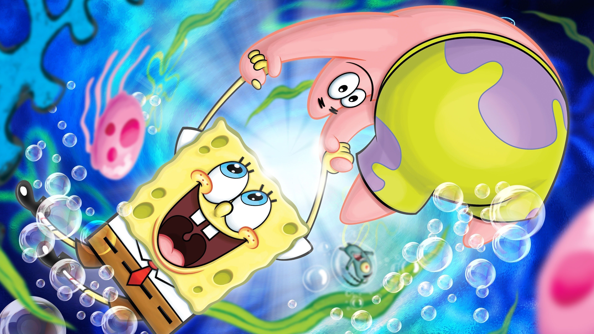
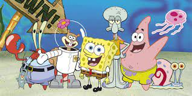

About Spongebob
Spongebob is the main protagonist in a cartoon named after him. He is an energetic, silly and an all around good guy. His show follows him and his adventures of being a gullible menace who has an innocent charm.
Spongebob and his best friend
Characteristics
Spongebob is a blue eyed yellow square shaped sponge. He always wears his signature uniform; a white shirt, red tie, brown shorts and black shoes. He has a signatute laugh and a specific squeaking noise that his shoes make. These things make him iconic and very easy to recognize. In his home town, he always sticks out in both attire and attitiude.
Spongebob's friends
Spongbob has many friends. Even though most people find him annoying, He can be pretty agreable.
His main gang includes:
- Patrick Star(Best friend and neighbor)
- Sandy Cheeks (Karate partner)
- Eugene Crabs aka Mr.Crabs (Boss)
- Squidward Tentacles (Coworker and neighbor)
His best friend is Patrick who matches his abnoxious and annoying energy